Edit content using blocks#
Volto features the Pastanaga UI, allowing you to visually compose a page using blocks. The blocks editor allows you to add, modify, reorder, and delete blocks given your requirements. Blocks provide the user the ability to display content in a specific way, although they can also define behavior and have specific features.
Manage blocks#
In Volto, "blocks" are individual pieces of content that can be added to a page or other content area. These blocks can be used to add different types of content—such as text, images, or multimedia—and can be arranged and customized to create a wide range of different layouts.
Blocks are a key feature of Volto, and are designed to make it easy for users to add and manage content on their website. They are created using React components, which are modular pieces of code that can be easily reused and customized.
Create a block#
To create or add an empty block after an existing block, click in the block, then hit the Enter key. A new empty block appears.
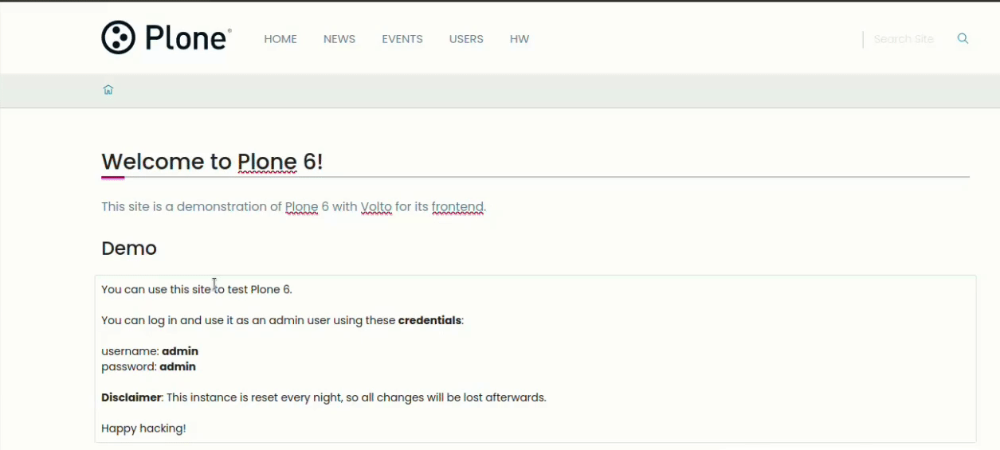Note
There is a new experimental feature that places a + below a block when it is active or moused over, and when clicked inserts an empty block below the current block.
See plone/volto#3815 for details of the feature and how to enable it.
Configure a block#
When you select a block, its block editor appears in the right margin of the page. Almost all blocks have some configuration options.
Rearrange blocks#
To rearrange blocks, to the right of the block you want to move, click on its drag handle, move the block where you want it in the page, and release the drag handle.
Copy headings as anchor links#
When you move your mouse over a heading, a link icon  appears on the right side.
Click this icon to copy a direct link to that specific heading on the page onto your clipboard.
appears on the right side.
Click this icon to copy a direct link to that specific heading on the page onto your clipboard.
Now you can paste the copied link to share a specific section of a page with others.
Note
This feature is enabled by default, and only authenticated users can use this feature.
Delete a block#
To delete a block, to the right of the block, click its delete button, a trash can icon.
Default block types#
Volto offers several default block types out of the box. You can access and choose a block type to add to your content type when you have an empty block in it.
Now with your empty block available, you can select its type in one of two ways.
Click the
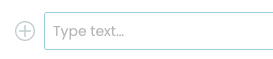+button to the left of the empty block.Type
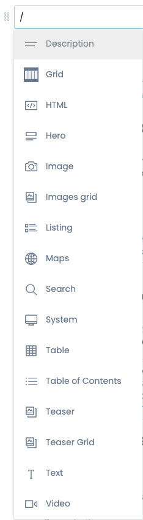/inside the empty block to open the block types menu. You can type a few letters to filter available block types. You can use the up and down arrow keys to navigate within the list of block types. To select the block type, you can click or tap on it, or use the Enter key.
Description block#
A description block accepts plain text.
When displayed, it appears as the description in the page, and for search engine optimization in HTML meta tags as <meta name="description" content="DESCRIPTION_TEXT" data-react-helmet="true"> and <meta property="og:description" content="DESCRIPTION_TEXT" data-react-helmet="true">.
Grid block#
A grid block creates a single row of columns in a grid, which can be used to display content in a structured, organized way. You can select the number of columns to insert.

After choosing the number of columns to insert in a grid block, you can manage the columns.

Specify the block type in a column by clicking its
+button.Rearrange the order of columns in the grid block by dragging and dropping them.
Add a column to the grid block by clicking the
+button above and to the left of it.Remove a column from a grid block by clicking its
×button.
HTML block#
An HTML block allows users to add custom HTML code to a page. This can be useful for adding custom functionality or styling to a page, or for integrating with external services or applications. For example, you can insert an HTML snippet or widget from a third party service to embed a calendar, payment or donation button, or social media into a page.

To use an HTML block, you need to have some knowledge of how to write HTML, unless you are provided an HTML code snippet from a third party that you can copy and paste into the block.
Image block#
An image block lets a user insert an image into a page and configure its attributes.
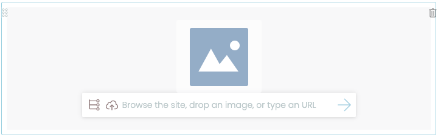After inserting an image block, an image must be specified by any of the following methods.
Choose an existing image in the site by clicking the block's list icon.
Upload a new image by either clicking the block's upload icon or drag and drop.
Enter a remote image's URL in the block's text area. Click the arrow icon to save the URL.
Once you have specified an image, its configurable options become available.
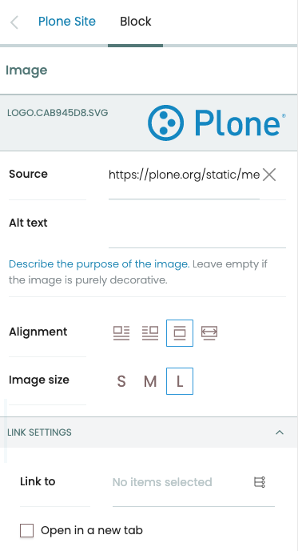- Source
The path or URL to the image.
- Alt text
Alternative text (alt text) is used by screen readers and search engines to describe the image. Alt text should not be used for decorative images, as it adds noise to the screen reader.
- Alignment
Options for alignment include left, right, center, and full width.
- Image size
The image size determines its relative display width, either small, medium, or large.
- Link to
You can enter a URL in the text field, or click the list icon and choose a page in your website, as the target for a link. You can optionally have the link open in a new tab when the user clicks it by checking the checkbox Open in a new tab.
Listing block#
A listing block allows users to display a list of content items in your Plone site on a page. A site editor can configure the criteria to use for retrieving content items, including text, title, dates, and creator. The retrieved results can be configured with a sort order, limit of results, and whether to batch the results with pagination.
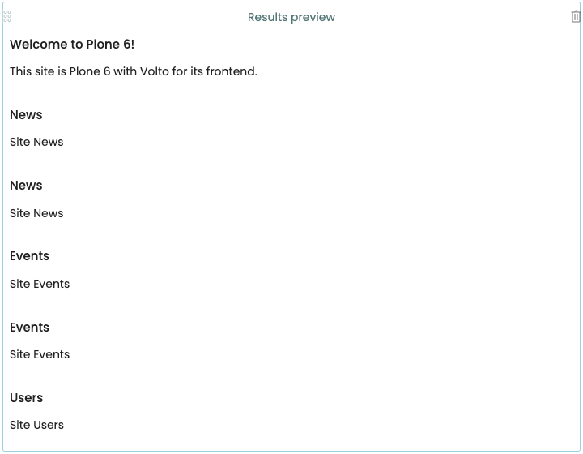The listing block has several configuration options.
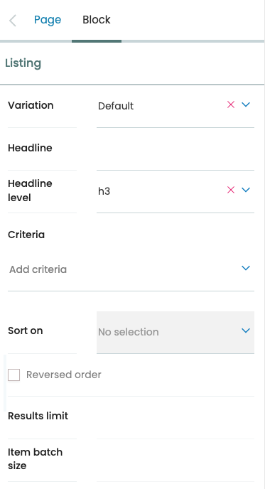- Variation
Options for variation include Default, Image gallery, and Summary.
- Headline
Optionally add a headline to the listing block.
- Headline level
Headline level sets the level of the headline to either H2 or H3.
- Criteria
Add criteria for the search. Options include searching metadata, dates, and text. Each criterion has its own options. For example, you can configure a search for content that was created between two dates, or for its location within a path of your Plone site.
- Sort on
Sort the retrieved results by a given option. Options include metadata, dates, and text.
- Results limit
Limit the number of results returned.
- Item batch size
Batch the search result items into a specified batch size.
Maps block#
A map block allows a user to add a map to a page. It is typically used to display a geographic location or region, or provide travel directions.

To use a map block, the third party map service must provide a snippet of HTML code that you can copy and paste into the map block.
Usually the snippet includes an <iframe> HTML tag.
After you paste the snippet into the map block's configuration, you will see additional options.
- Maps URL
The URL of the map.
- Alt text
Alternative text to display in search engine results and to screen readers.
- Alignment
Options for alignment include left, right, center, and full width.
Search block#
A search block provides a search interface for visitors to find content in a Plone site. A site editor can configure its search criteria and facets across numerous parameters, including text, status, dates, and creator. Search results can be configured with a sort order, limit of results, and whether to batch the results with pagination. A site editor can choose which search controls to offer to the visitor, including sort order and total results.
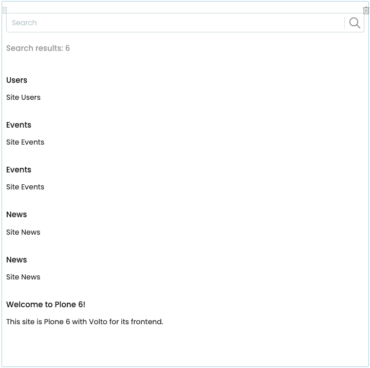You can configure the search block by modifying its options in the block editor.
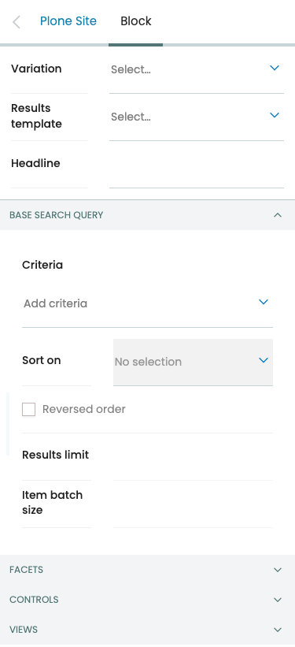Todo
Add omitted configuration options.
Basic options#
- Variation
Options for variation include Facets on right side, Facets on right side, and Facets on top.
- Results template
Options for results template include Default, Image gallery, and Summary.
- Headline
The value to display above the search box as a heading.
Base search query options#
- Criteria
Add criteria for the search. Options include searching metadata, dates, and text. Each criterion has its own options. For example, you can configure a search for content that was created between two dates, or for its location within a path of your Plone site.
- Sort on
Sort the search results according to the selected option. Optionally sort results in reverse order by checking the checkbox Reversed order.
- Results limit
Limit the number of results returned.
- Item batch size
Batch the search result items into a specified batch size.
Facets#
- Section title
Todo
This needs content.
- Facets
Click the button Add Facet to add a facet to the search. The first facet appears as "FACET #1". You can add many facets, reorder them by drag and drop, and delete them.
- Label
Todo
This needs content.
- Field
Todo
This needs content.
- Facet widget
Todo
This needs content.
- Multiple choices?
Todo
This needs content.
- Hide facet?
Toggle to show or hide the facet. Hidden facets will still filter the results if proper parameters are passed in URLs
- Advanced facet?
Select to set the facet as advanced. Advanced facets are initially hidden and displayed on demand.
Controls#
You can configure which search controls to offer to the site visitor.
- Show sorting?
Toggle to show or hide the sorting control.
- Show search input?
Toggle to show or hide the search input field.
- Show search button?
Toggle to show or hide the search button. When the button is present, the auto-complete search feature is disabled, and the query is issued when the visitor types the Enter key.
- Show total results?
Toggle to show or hide the search results total count.
Views#
- Available views
Options include Default, Image gallery, and Summary.
Table block#
A table block inserts a table with two rows and two columns of cells to hold data, with the first row as the header row. It is typically used to display structured data in a clear and organized way. It can be configured to display the data in different styles and layouts.
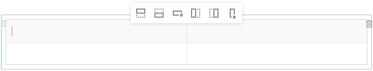You can use the editor at the top of table to add rows and columns to the table, and to delete rows and columns.
To enter data, click in a cell, and type. You can optionally format data.
The table block has several configuration options.
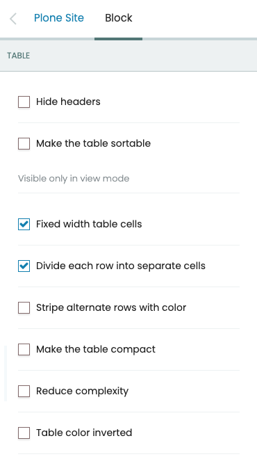- Hide headers
Toggle to show or hide the table header row.
- Make the table sortable
Toggle to enable or disable sorting the table by the values in its columns. When enabled, a visitor may click a column's header to sort by that column.
- Fixed width table cells
When enabled, the columns are fixed to an equal percentage width of the table. For example, a table with four columns would have each of its columns fixed at 25% of the table width.
- Divide each row into separate cells
When enabled, the cells in a row are separated by a vertical border.
- Stripe alternate rows with color
When enabled, the rows in the table body are striped with alternating colors.
- Make the table compact
When enabled, padding of cells is reduced, giving a more compact appearance.
- Reduce complexity
When enabled, the top, left, and right table borders are removed.
- Table color inverted
When enabled, the table color is inverted.
Table of contents block#
A table of contents (TOC) block creates a list of links to the titles and subtitles of text blocks in a page. A TOC block makes it easier for a visitor to navigate to a section of a long or complex page. It can be configured to display the links in different styles and layouts.
To use a TOC block, you must first have text blocks with titles or subtitles in your page. When you add a TOC block to the page, a table of contents is automatically populated with the titles and subtitles in a bulleted list, with subtitles indented.
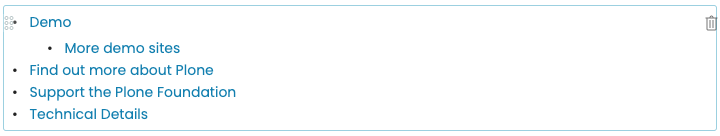The TOC block has several configuration options.
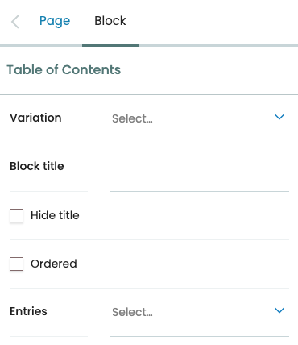- Variation
Toggles the display of the TOC to be a listing (default) or horizontal as tabs. The horizontal variation also adds a dropdown button, if necessary, so the items that won't fit would be displayed in the dropdown list.
- Block title
Optionally add a title above the table of contents.
- Hide title
When enabled, it hides the title.
- Ordered
When enabled, it changes the listing to a numbered (ordered) list.
- Entries
Selects which heading levels to display. Currently only heading levels
H2(titles) andH3(subtitles) are supported.
Text block#
Todo
Needs content.
Video block#
A video block allows an editor to insert a video in to a page. Enter the URL of a video hosted by a third party, and click the right arrow to save it. A preview of the video displays.

The video block has several configuration options.
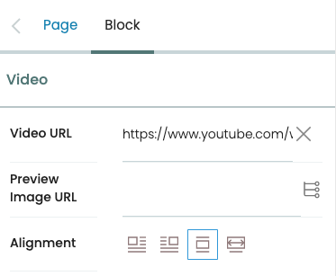- Video URL
The URL of the video.
- Preview Image URL
Optionally set a preview image. You can enter a URL of an image in the text field, or click the list icon and choose an image in your website.
- Alignment
Options for alignment include left, right, center, and full width.